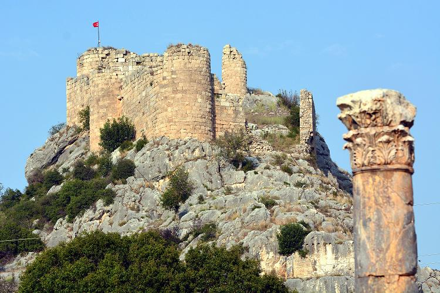
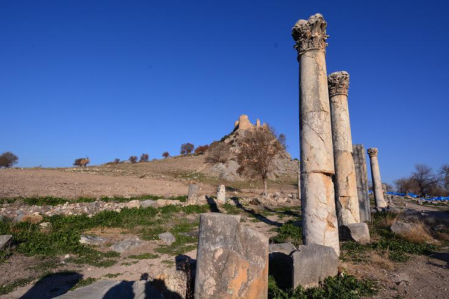

Kastabala (Hierapolis), Anadolu’nun güneydoğusunda Osmaniye'nin 12 kilometre kuzey-kuzeybatısında Cevdetiye Beldesi-Karatepe Müzesi yolu üzerinde Kesmeburun, Bahçe ve Kazmaca köylerinin ortasında yer alır. Kent, Ceyhan (Pyramos) Nehri’nin yakınlarında küçük bir ovaya hakim konumdadır. Kastabala'nın yer aldığı Kilikya Bölgesi'nden elde edilen yüzey buluntuları M.Ö. 2000 ile Roma İmparatorluğunun geç Roma dönemleri arasında farklı dönemlere tarihlenmiştir. Ancak Kastabala’nın M.Ö. 1000'li yıllardaki Roma İmparatorluğu dönem arkeolojisi henüz yeterince araştırılmamıştır.
Kentte 2009 yılında ilk kez başlatılan ve halen devam eden kazı çalışmalarından elde edilen sonuçlar şimdiden kentin bugüne kadar bilinen tarihçesini değiştirmiştir. Geç Neolitik-erken Kalkolitik; M.Ö. 5.yy, M.Ö. 1.yy - M.S. 1.yy, M.S. 2.yy, M.S. 4-6'ncı yüzyıllar ve M.S. 13-15'nci yüzyıllara tarihlenen buluntuların varlığı Kastabala ve bölge arkeolojisine dair eksik bilgileri tamamlayıcı bulgular vaad etmektedir. Kentte sürdürülen kazı ve araştırmalar kentin sınırlarının güneyde Ceyhan Nehri, kuzeyde Karatepe, batıda Kırmıtlı Kuş Cenneti arasında genişleyen verimli ovayı kapsadığını ortaya koymaktadır. Sur ile çevrili kent merkezindeki yapılar kale tepesinin hâkim olduğu küçük bir vadinin kuzey, güney ve doğu yamaçlarında tespit edilmiştir. Kayalık doğal yükseltiler kuzeyde yerleşmenin doğal sınırını oluşturmuştur. Kentin kuzeybatısında, kalenin kuzeydoğu eteğinde kayaya açılan geçit batı ile doğu konut alanlarını birbirine bağlamaktadır.
Antik kentin Roma İmparatorluğu Dönemi’nde (M.S. 2.yy) sur duvarı ile çevrili olmadığı, ilk savunma sisteminin M.S. 4.yy sonlarında inşa edildiği düşünülmektedir. Şehir plancılığı açısından sütunlu cadde yerleşmenin ana aksını belirlemektedir. Duvarlar ve tonozlarla eğimli arazide düz teraslar elde edilmiştir. Yamaca oturtulan ızgara planlı kentte merkezi yapılaşma ile kamu yapıları arazinin ortasına yerleştirilmiştir. Tiyatro, hamam, dükkanlar, kuzey ve güney kiliseler bu plana uygun parsellerde inşa edilmiştir. Ortaçağ Kalesi ise savunmaya elverişli kayalık bir tepe üzerinde yükselmektedir. Mevcut kamu yapılarının ilk yapı evresi Severuslar Dönemi'ne tarihlenmektedir. Kastabala antik kentinin genişlediği alanı doğu, kuzey ve güneyde çevreleyen engebeli kayalık yamaçlarda çok sayıda mezar mevcuttur.